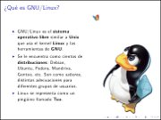
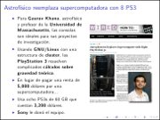
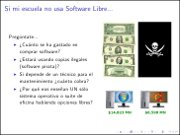
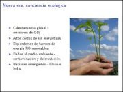
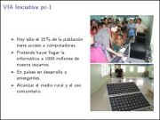
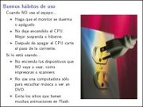

Movimiento Libre
Colección de ideas.
Educación
Edubuntu en la educación
2009-10-28 01:00 - guivaloz
  
Para la 16va. Semana Nacional de Ciencia y Tecnología en un evento organizado por el COECYT de Coahuila representando a InnovaTIC y al GULAG, elaboré la presentación “Edubuntu en la educación”.
Este material es una semblanza de lo que es el Software Libre, Ubuntu y Edubuntu, haciendo énfasis en su aplicación para el ámbito educativo. Se le hace la pregunta al público de que si sabe cuánto se gasta por comprar software privativo, si sabe que se estén usando copias ilegales del mismo y si es justo que sólo se enseñe una alternativa comercial habiendo otras libres. Concluye reflexionando sobre el potencial de la Comarca Lagunera para integrarse a las Industrias de la Información y Comunicación.
Descargar
Revista del Consumidor - La descarga te hará libre
2009-05-09 14:00 - guivaloz
Una muy grata sorpresa es encontrar un artículo dedicado al software gratuito en una revista de circulación nacional. Es en la Revista del Consumidor de Mayo de 2009. En la portada aparece como “Software Gratis que sí te ayuda a ahorrar (y no te convierte en pirata)”.
Escrito por Sara Velázquez, habla a cerca de las desventajas de usar software pirata y que la solución, en estos tiempos de crisis, es recurrir al software gratuito. Ella menciona: “Por lo regular, lo que es gratis suena a que es malo, o que será de menor calidad, pero no siempre es así. Por ejemplo, este artículo fue escrito utilizando OpenOffice 3.0, un paquete gratuito para oficina que no le pide nada al popular Office 2007.”

Consejos para una Informática Ecológica
2008-05-17 15:30 - guivaloz
  
Ante una nueva era donde hay más conciencia por la conservación del medio ambiente nos vemos en la necesidad de buscar mejores alternativas, más eficientes energéticamente hablando, de nuestros equipos informáticos. Las nuevas tecnologías del Kernel Linux, los fabricantes de equipos de cómputo y los usuarios debemos de hacer esfuerzos por lograr disminuir el consumo de energía en pro de nuestro mundo.